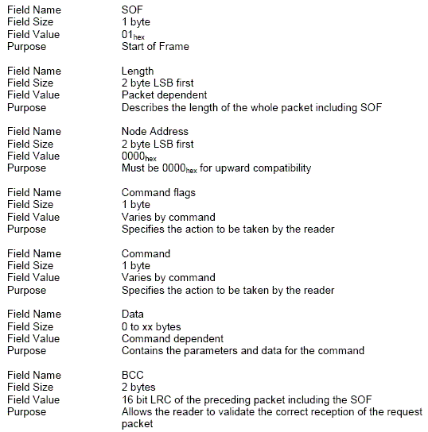
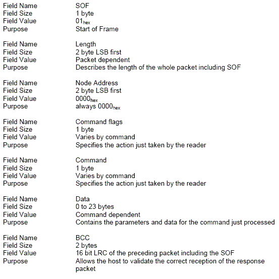
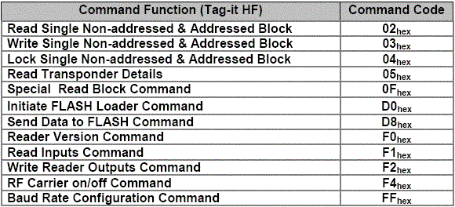
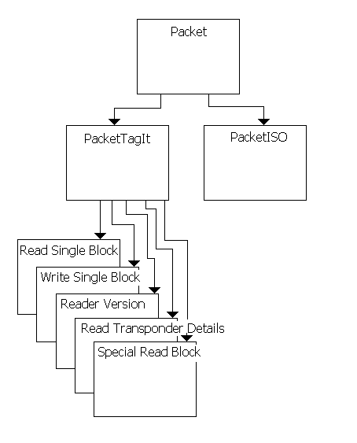
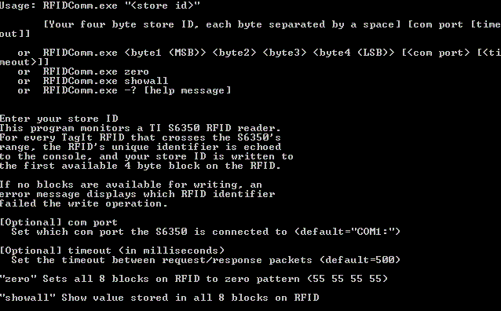

|
Ashish Vashishta Jeff Wilson CSI 5321 November 5, 2003 |
RFID: Radio Frequency IDentification |
BackgroundTexas Instruments (TI) is a leader in Radio Frequency Identification (RFID) technology. RFID consists of a transceiver (transmitter/receiver) and transponders. The transponders come in many shapes and sizes, and can be embedded in a credit card or hidden within the seam of a garment. Some are active (embedded power source) but most are passive, activated and powered only by the 13.56MHz carrier signal from the transceiver. TI manufactures both Tag-it (proprietary) and ISO-15963 transponders. Most, if not all, of TI's transceivers can address either type of transponder. |
S6350We have acquired an evaluation kit from TI containing the TI S6350 transceiver, several Tag-it transponders, and several ISO transponders. The S6350 is designed to communicate as a slave over RS-232 to a master host. As shipped, its effective range is about 3 inches. Part of our research involves developing a loop antenna (using this reference), but it was not completed in time to be included in this report. To make effective use of the S6350, programmatically, requires continuous polling via RS-232 from the host computer. Communication is achieved by sending packets of bytes to the S6350, then immediately reading the response. Detailed information about the S6350's command language is available from the TI RFID documentation. |
RFID APIWe have developed a user library in C# for TI's S6350 evaluation kit. Our library provides object oriented command encapsulation as well as a transport mechanism for RS-232 communication. As of this writing, only a subset of the Tag-it commands are represented. We have not included any of the ISO commands. However, extending the library to cover the remaining Tag-it commands as well as the ISO commands should require minimal effort. |
Serial Protocol and Packet DefinitionAs mentioned in the S6350 documentation, the S6350 uses RS-232 configured as follows: 1 start bit, 8 data bits, 1 stop bit, no parity, and baud rate configurable to 9600, 19200, 38400, or 57600.The host computer initiates all communication with the S6350. Communication sequences consist of request/response pairs where the hosts waits for the reponse before continuing. The following chart demonstrates the format of a request packet. (The node address is ignored by the S6350.)  Request Packet format (Host to Reader) The request packet consists of a seven byte header, a variable length data section, and a two byte trailer. The command flag has two legal values (0x00 and 0x10), since all but one bit are reserved for future definition. When bit 4 is set, the request is addressed to the transponder specified by the data section of the request packet. Otherwise, the request applies to any transponder within range of the reader. For response packets (details below), the command flag is used to indicate error condition (0x10 indicates error, with specific error codes encoded in the data section of the response packet). The BCC (block check character) consists of a one byte LRC (longitudinal Redundancy Check) and one byte of the ones-complement of the LRC. The LRC is a cumulative XOR calculated over the entire packet. Request packets and response packets each require a BCC trailer.  Response Packet format (Reader to Host) Of the twelve Tag-it commands set forth, we have implemented five: Read Single Block, Write Single Block, Special Read Block, Reader Version, and Read Transponder Details.  Tag-it HF Command Definitions (byte codes) |
Code Design, AcknowledgmentsC# allows for excellent object oriented design. Using an Abstract Factory design pattern, (modeled after code graciously supplied to the authors by our mentor, Dr. Jeff Donahoo) we have implemented the following class hierarchy. Byte arrays are exposed by serialize() methods, and class instances are returned by static deserialize() methods. C# Class Hierarchy The serial communication API we used is borrowed from John Hind, who published his NetSerialComm library in the October 2002 MSDN Magazine. The NetSerialComm API provides for sending and receiving byte-at-a-time communication via RS232. John's article walks the reader through extending his API towards more specific application. Our packet transaction model (RFIDComm) is not very different from example code posted on MSDN. Thanks, John! The packet transaction model (type signature shown below) public static Packet TransactPacket(Packet request)merges knowledge of RFID command packet formatting with an extension of the NetSerialComm API. The NetSerialComm API uses overlapped I/O (which uses callback funtions) for asynchronous communication. Given that the packet size is encoded within the first three bytes of each packet, the callback member function in RFIDComm signals the Transact() thread upon completion of the packet, which terminates its wait state upon receiving the signal, and returns the Packet it receives to the calling application. |
ImplementationTo facilitate ease of use, we have combined several basic operations into static helper functions accessible via the RFIDUtil class. A brief discussion of these helper methods follows.First of all, however, it is worth noting the default assumptions made by the RFIDUtil helper class. The default com port starts at "COM1:". This can be changed by accessing public static string RFIDUtil.comPort and setting it to the desired com port prior to invoking any of the helper methods. The default timeout, accessible via public static uint RFIDUtil.timeOut, starts at 500 ms. public static bool WriteBlock( DataBlock db ) public static bool WriteBlock( uint TransponderID, DataBlock db ) public static bool ZeroRFID( string zero ) public static bool ZeroRFID( uint TransponderID, string zero ) public static Special_Read_Block ReadAllBlocks() |
ScenarioTo help flesh out an implementation of our RFID API, we have come up with the following scenario: A store owner wishes to take inventory of RFID-equipped crates using the S6350 reader. If a crate has already been marked into the store's inventory, the RFID will contain the store's four-byte identifier (conversely, the store's database will already contain the RFID's unique serial number, but we have not tied in any database code to our small demonstration project). If the crate has no remaining empty blocks to write into, the inventory function fails. Otherwise, the store ID is written to the first available data block on the crate's RFID.If you want to play around with an S6350, download the source code (linked below) and run the RFIDComm.exe in the bin\Debug folder. (You must have the .NET Runtime installed to execute this binary. You may have to update your Runtime to match the dependencies of this executable.) Invoke "RFIDComm.exe -?" to see a detailed help screen (shown below).  |
Source CodeThe entire Visual Studio.NET 2003 project (implemented in C#) is available for download. |
How do I make it work?These instructions assume you have the TI S6350 evaluation kit.To use the S6350 and the various sample RFID transponders (tiny IC chips in a floppy plastic sheath with a spiraled antenna), you will need power to the transceiver, and communication from the transceiver to the PC host controller. For power, assemble the AC adapter with the US prongs. The S6350 transceiver is about the size of a cigar box -- plug in the DC pigtail of the AC adapter into the transceiver. Now find the serial cable: you need a cable about 6 feet long, with one end as 9 pin male, and the other end as 9 pin female. Connect the male end to the transceiver, and the female end to your PC. (Pay attention to whether you use COM1 or COM2, that's important.) To compile the source, you will either need Visual Studio.NET 2003, or you will need to have the .NET runtime installed. If you use Visual Studio.NET to run and debug our source code, don't forget to set the command line parameters in the Debug settings. To compile our source code with only the .NET runtime installed, you must first find the C# compiler, csc.exe: cd %WINDIR%Once you've found csc.exe, call it from your source code directory to compile the program: %WINDIR%\Microsoft.NET\Framework\<latest version number>\csc.exe *.csRemember which COM port you plugged into? If it's COM1, you don't have to worry about it, that's the default. Otherwise, if your store ID is 0xAABBCCDD, run the program like so: RFIDComm.exe "aa bb cc dd" <your COM port>Now, any TI TagIt transponder you wave over the S6350 transceiver will have its first available four-byte block written with AA BB CC DD, and its unique Transponder ID will be echoed to your console. |